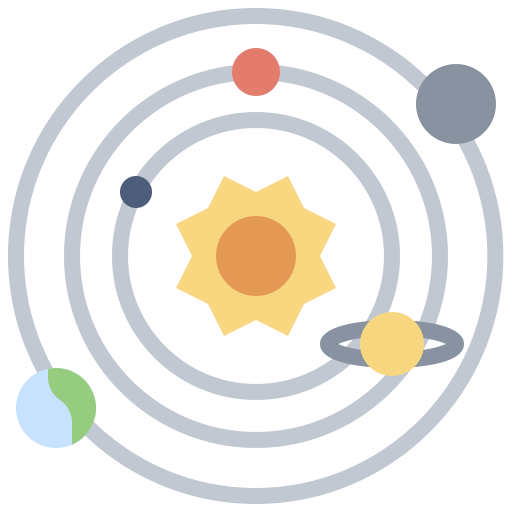

Путешествие по Солнечной системе
Погрузитесь в увлекательное путешествие, чтобы узнать больше о тайнах космоса, грандиозных расстояниях и удивительных явлениях, которые окружают нас!
Что такое солнечная система?
Солнечная система — это планетная система, состоящая из звезды (Солнца) и всех небесных тел, которые гравитационно связаны с ней. В нее входят планеты, их спутники, астероиды, кометы, метеороиды и космическая пыль. Все эти объекты вращаются вокруг Солнца под действием его гравитации. Солнечная система расположена в галактике Млечный Путь.
Из чего состоит солнечная система?
Солнечная система — это планетная система, состоящая из звезды (Солнца) и всех небесных тел, которые гравитационно связаны с ней. В нее входят планеты, их спутники, астероиды, кометы, метеороиды и космическая пыль. Все эти объекты вращаются вокруг Солнца под действием его гравитации. Солнечная система расположена в галактике Млечный Путь.


Удивительные факты
Наша Солнечная система полна удивительных явлений и загадок. Каждая планета уникальна: от гигантских бурь Юпитера до древних вулканов Марса. Изучение этих миров помогает нам лучше понять космос и наше место в нем.
Солнечное топливо
Солнце каждую секунду сжигает около 600 миллионов тонн водорода, превращая его в гелий. Этот процесс выделяет огромное количество энергии, которая обеспечивает свет и тепло для всей Солнечной системы. Несмотря на такие колоссальные затраты, запаса топлива хватит еще примерно на 5 миллиардов лет!
Долгий меркурианский день
На Меркурии день длится два меркурианских года! Это потому, что Меркурий вращается вокруг своей оси очень медленно — один оборот составляет 59 земных дней, а его орбита вокруг Солнца занимает всего 88 земных дней.
Горячая штучка
На Венере температура на поверхности может достигать +460°C, что горячее, чем на Меркурии, несмотря на то, что Венера находится дальше от Солнца. Всё из-за её плотной атмосферы, состоящей в основном из углекислого газа, который создаёт мощный парниковый эффект.
Земля: место, где вода течет
Земля — единственная планета в Солнечной системе, на которой существует жидкая вода в значительных количествах, что делает её уникальной для поддержания жизни.
Покруче Эвереста
На Марсе находится самая высокая гора в Солнечной системе — Олимп (Olympus Mons), высота которой составляет около 27 км, что более чем в три раза выше, чем Эверест!
Практически звезда
Юпитер мог бы стать звездой, если бы его масса была в 80 раз больше. Однако из-за недостаточной массы он так и остался планетой, хотя состоит из тех же элементов, что и звезды.
Планета-гигант, которая легче воды
Сатурн — это самая легкая планета в Солнечной системе. Его плотность настолько низка, что если бы можно было поместить Сатурн в гигантский океан, он бы плавал на поверхности!
Космический гигант, лежащий на боку
Уран — единственная планета в Солнечной системе, которая вращается на боку. Его ось наклонена почти на 98 градусов, что делает его вращение уникальным и сильно отличающимся от других планет.
Ожидается порывистый ветер...
Нептун — самая удаленная планета от Солнца в нашей Солнечной системе и обладает самыми сильными ветрами: их скорость может достигать 2,100 км/ч, что почти в 5 раз быстрее скорости звука!